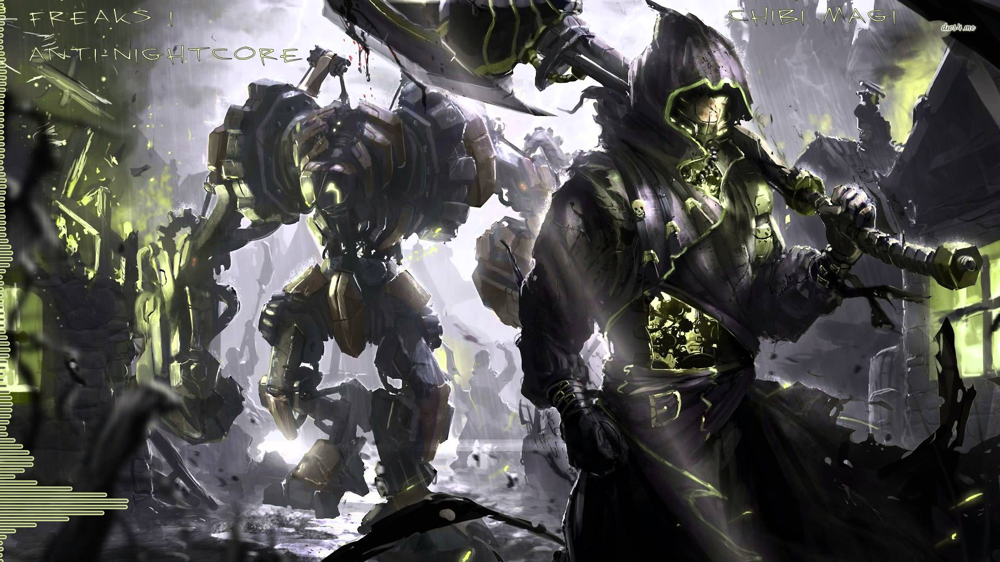

The Different Versions of Nightcore Out There
Even though Nightcore is a gnre in on itself there are many different variations in which Nightcore can take form.

Nightcore
- To start off Nightcore is the most popular form of its genre as it is the original form of the genre as it is a remix of a song made by increasing the speed and pitch of the original song.

Nightstep
What comes up next is Nightstep. Nightstep is very similar to Nightcore and is usually indicated that a song is "Nightstep". These types of songs are considered to be more upbeat and created similarly by increasing the pitch and speed of a song and maybe as well as the bass.

Switching Vocals Nightcore
- Next is Switching Vocals Nightcore where there the vocals of the song would switch from boy and girl or 2 boys, or 2 girls. This is typically created using 2 covers of an original song and combining them or you can switch the vocals yourself which is more difficult. There are also switching vocals when you have more than one or two songs and you can combine the lyrics of many songs and many vocals to make the end product sound better.
Female/Male Vocals Nightcore
Another type of Nightcore is Male or Female version Nightcore. This is usually occurs because some songs are sung by specifically a man or a woman and it would be interesting for some people if the vocals are switched, so these type of Nightcore songs are usually covers of whatever the voice is changed to. These types of songs are usually created by always increasing the tempo or speed of the song, and depending on if the vocals are going to be man or woman then, the pitch would either have to be increased or decreased.

Daycore (Anti-Nightcore)
- Finally, there is Daycore or Anti-Nightcore which is derived from Nightcore but is considered the opposite of Nightcore. This is used to make the music sound more like a man as these songs are slower and longer. These types of "Nightcore" songs are created by decreasing the speed and pitch of the song. These types of songs are generally used for Pop Songs or EDM.